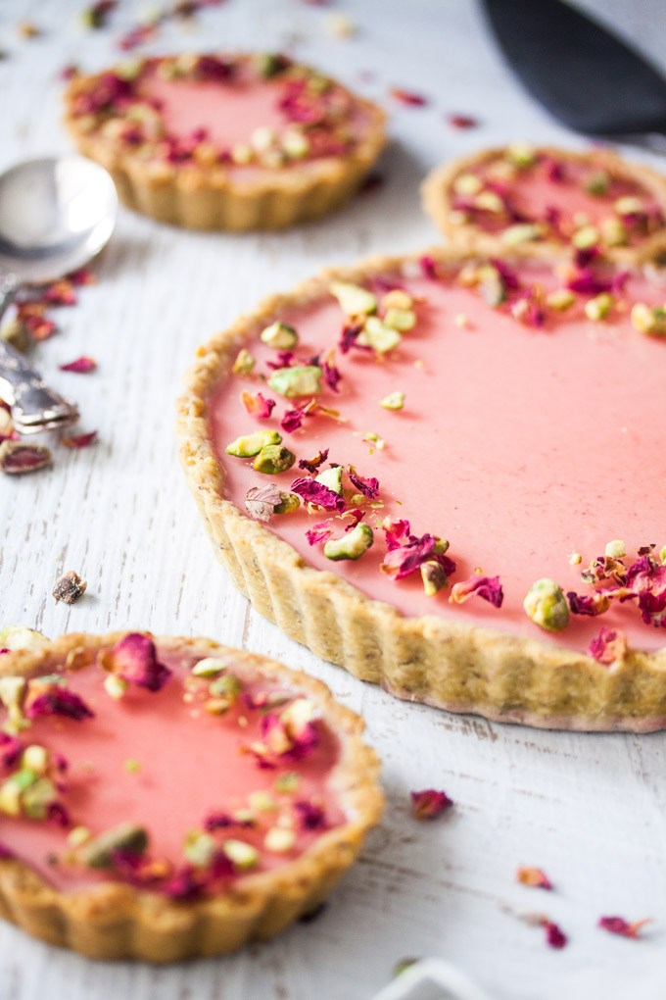

45 minute
Pentru blatul tartei din fistic
Pentru panna cotta
Pentru jeleu de trandafir
Pentru topping-uri
1. Preîncălziți cuptorul la 180C / 350F si tapetați baza rotundă pentru tartă cu hârtie de copt.
2. Mărunțiți fisticul intr-un blender sau robot de bucătărie până când acesta devine fin.
3. Adăugați făina, zahărul și sarea în într-un mixer, împreuna cu fistul măcinat și mixați până ce amestecul devine omogen.
4. Adăugați unul in compoziție și mixați timp de 5-10 secunde până când amestecul arată ca niște bucăți mari de pâine
5. Treptat, se adaugă apa în amestect, folosit mixerul sau robotul de bucătărie la viteză mică și se oprește când se observă că amestecul a început să se lege.
6. Puneți aluatul obținut în forma de tartă deja tapetată cu hârtia pentru copt și modelați aluatul cu mâna până când acesta are aproximativ 3-4 mm grosime. Folosiți un cuțit pentru a tăia excesul din jurul marginilor și o furculiță pentru a găuri aluatul la baza formei.
7. Așezați o foaie de hârtie de copt peste aluat și umpleți cu greutăți de copt (sau orez, linte, cereale uscate similare). Coaceți timp de 15 minute. Scoateți hârtia de copt și greutățile, apoi coaceți pentru încă 10 minute sau până când începeți să observați s-a rumenit pe margini.
8. În timp ce coaja de tartă este încă fierbinte, periați-o cu albuș de ou și întoarceți-o la cuptor timp de 1 minut. Scoateți din cuptor și lăsați să se răcească timp de 5 minute în timp ce faceți Panna Cotta.
1.
2.
3.
4.
1.
2.
3.
4.
1.
2.
3.
4.
